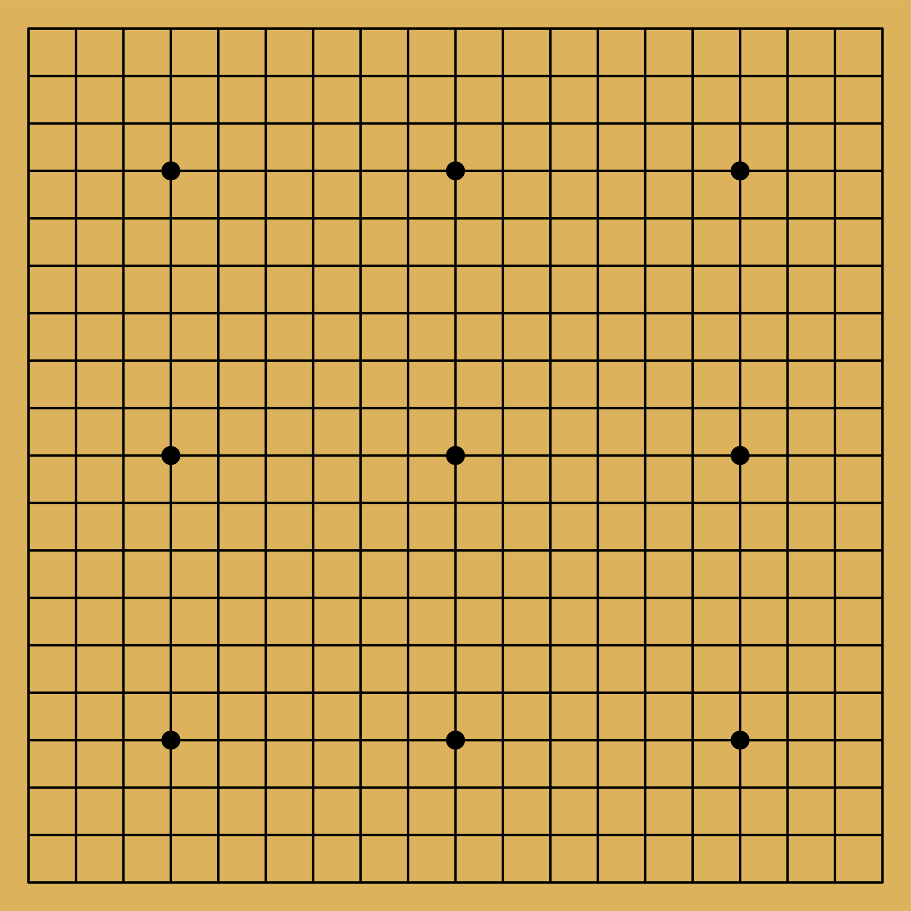

Chinese Go (or just plain Go)
Read the rules for Go here.
The image below has most of the characteristics
of a typical go board.

Click here to see the sample gamestate rendered
A Little About Go
Go is an ancient Chinese board game believed to be
the oldest board game played continuously to the
present day. In the game each player can put down
one stone per turn, if a stone is completely surrounded
it is "dead" and is removed from the board. If a stone
is adjacent (not diagonally) to another stone of the
same color then its "lives" are added to those of the
other stone. The game ends when one player conceeds
defeat.
How I will Implement the Algorithm
The alogrithm I will usefor detecting "dead" stones
uses two common data structures primarily as well as a
recursive function. It's steps are as follows:
-
Each index on the board will be visited in a loop.
-
If a stone is not found the loop continues.
-
If a stone is found the loop will push the stones indicies onto a stack.
-
The loop will then call a recursive function to determine the stones group and total lives.
-
The recursive function will execute until there are no stones in the stack.
On each iteration it will push the stones it finds adjacent to the
current stone onto the stack and add the current stone into a visited
set. It will keep a count of the number of total lives the stone
group has as well as the location of each stone in the group.
-
After the recursive function executes the stone group and life count is saved and the loop continues.
-
If the loop encounters a stone that is in the visited set it will skip that stone.
-
After the loop finishes all of the dead stones will be removed from the board and play will continue.